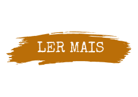

(1889 - 1930)
Sufrágio
A maioria das Constituições latino-americanas do século XIX sequer proibiam o voto feminino, pois o título de cidadão era dado apenas aos homens. Quando as mulheres resolveram, então, reivindicar seu direito de voto [...]
Eventos e Organizações
1922
Formação do Partido Republicano Feminino por Leolinda Daltro e Gilka Machado, primeiro partido político liderado por mulheres [...]
1922
Surge a Federação Brasileira pelo Progresso Feminino (FBPF), organizada por Bertha Lutz, que atuou fortemente na política brasileira em defesa da inserção da mulher no mercado de trabalho, o direito à educação e a conquista do voto feminino.
Mulheres que se destacaram

Feminista Bertha Lutz.
Bertha Lutz
(1894-1976)
Nascida no estado de São Paulo, foi uma das maiores representantes do movimento sufragista no Brasil, defendendo também os direitos femininos ao trabalho e a educação. Desenvolveu importantes pesquisas científicas, ganhando reconhecimento internacional. Em 2001, foi instituído pelo Senado brasileiro o Diploma Mulher Cidadã Bertha Lutz para homenagear anualmente cinco mulheres que tenham se destacado na luta pelos direitos femininos no Brasil.
(1930 - 1945)
Direito ao voto
O direito ao voto para todas as mulheres só se tornou realidade com a promulgação do Código Eleitoral de 1932. Foram estabelecidas normas eleitorais e abolidas as restrições de gênero, estendendo o direito ao voto e a representação política às mulheres [...]
(1985 - presente)